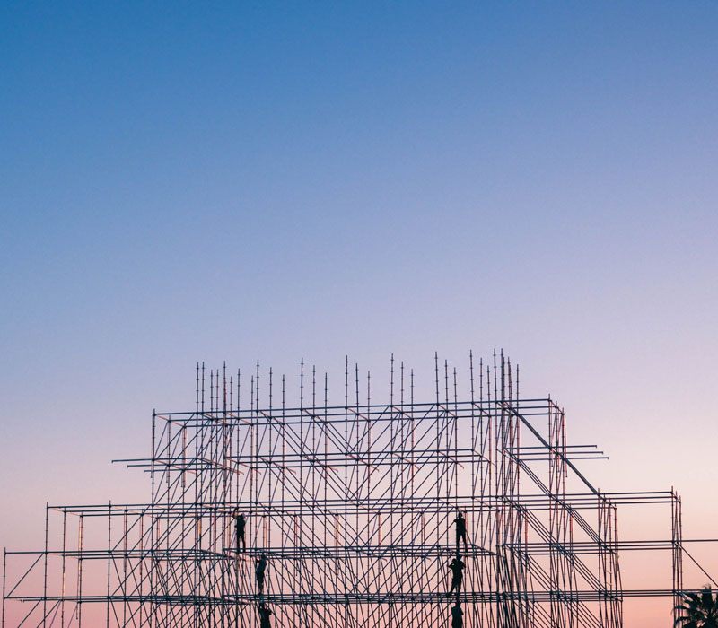

01
Residential Construction
Complete house construction for plot owners, families and premium residential projects.
Explore serviceResidential and commercial construction backed by decades of practical experience. From grey structure to turnkey delivery, we help property owners build with clarity and confidence.
Discuss Your ProjectView ProjectsFrom new construction and grey structure to woodwork, plumbing, paint, maintenance and remodeling, explore the services available through one coordinated services hub.
Complete house construction for plot owners, families and premium residential projects.
Explore service
Construction support for offices, commercial buildings and investment properties.
Explore service
Foundations, RCC, masonry and structural works planned around drawings and site requirements.
Explore service
A coordinated construction-to-finishing solution for clients who want one project workflow.
Explore service
Upgrade existing spaces through planned renovation, remodeling and finishing work.
Explore service
Media walls, wall panelling, ceilings, doors, cabinets and custom interior woodwork.
Explore service
Planned water-supply, drainage and plumbing installation for new builds and renovations.
Explore service
Metal fabrication and blacksmith solutions for gates, railings, grills and structural details.
Explore service
Interior and exterior painting, surface preparation and finishing systems.
Explore service
Practical maintenance support for keeping residential and commercial properties functional.
Explore service
Construction block solutions and material support for building requirements.
Explore serviceFlooring, ceilings, paint and finishing details that complete the property.
Explore serviceSMA Builders has a construction legacy dating back to 1953. Our digital presence is being built around the same principles we bring to projects: practical experience, clear scope, quality execution and responsible communication.
Project case studies are a core part of our long-term website strategy. Verified project details and photography will be added as the portfolio is documented.

Portfolio area for verified residential project case studies.
Explore portfolio →
Portfolio area for a verified premium residence case study.
Explore portfolio →
New project pages can be added as each project is documented.
Discuss a project →Clear guides and answers for people planning a home, commercial property, renovation or major construction project.

Understand why prices change and how to compare a quotation properly.
Explore guide →
Learn what happens between excavation, foundations, RCC, masonry and the roof.
Explore service →
Drawings, BOQ, scope, contractor selection and the questions to ask before work starts.
Read FAQs →We explain construction terms and decisions in straightforward language for non-technical property owners.
Compare the same drawings, covered area and scope first. Then compare structural work, materials, services, finishes, exclusions, payment stages, timeline and variation rules. A lower headline rate does not necessarily mean a lower final cost if important items have been excluded.
Construction costs can change because material and labour prices move over time and because every project has different drawings, covered area, site conditions and finishing choices. A website should explain the cost factors and, when it publishes a range, clearly show the date and assumptions behind it.